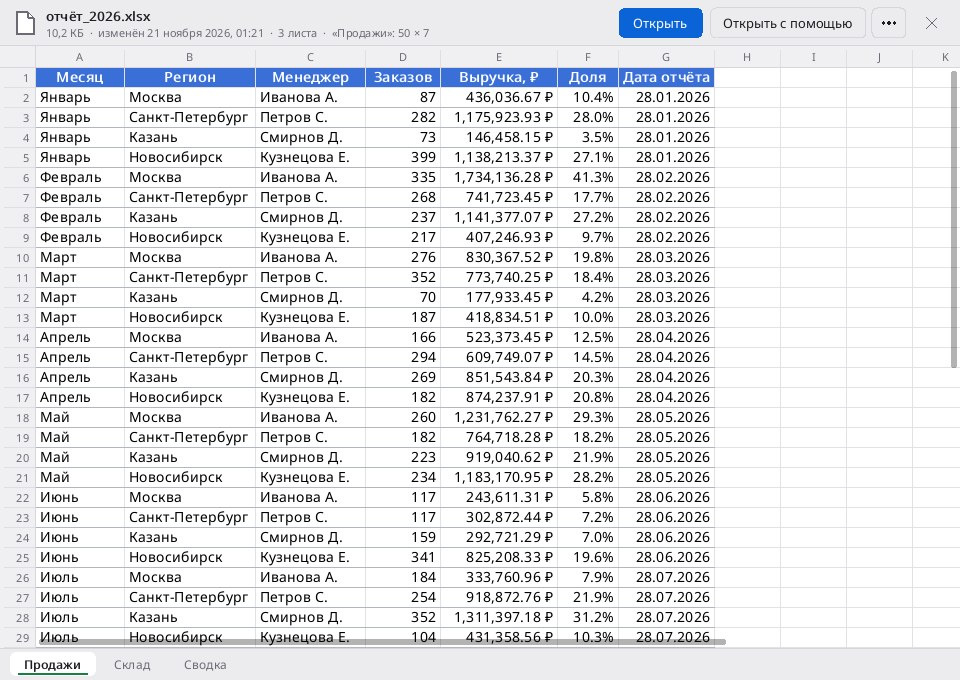
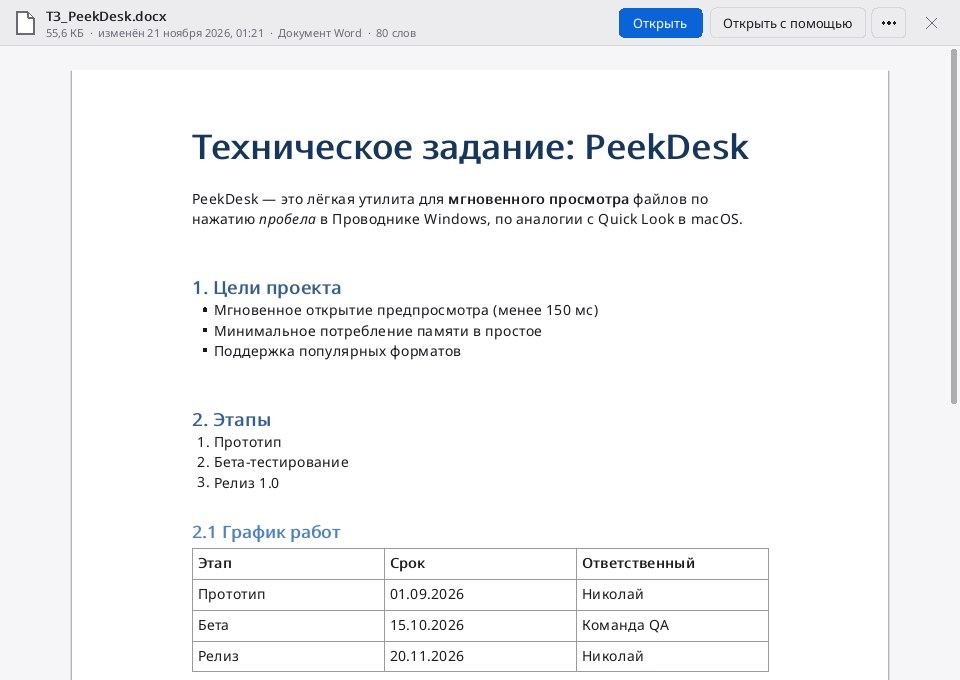
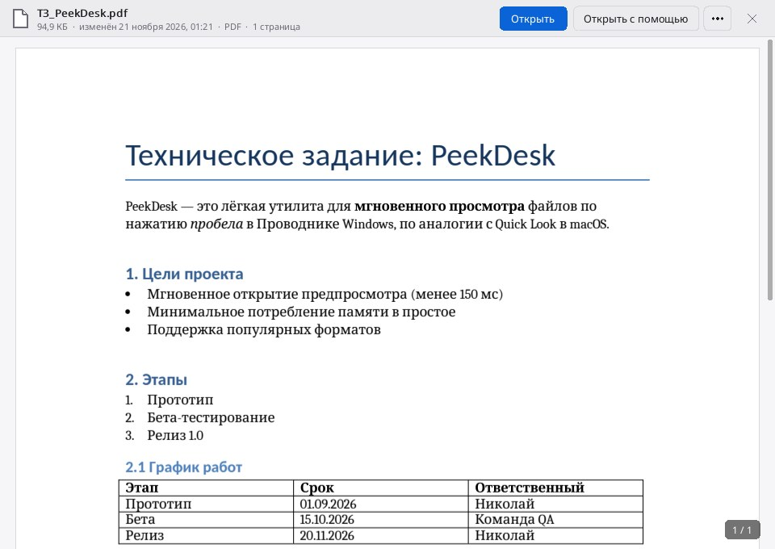
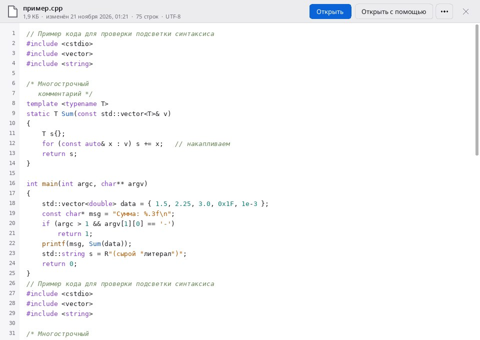
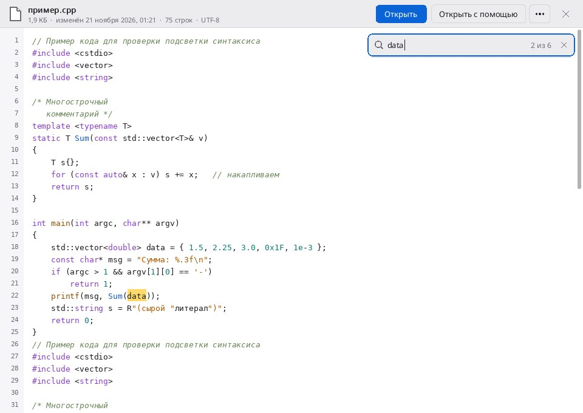
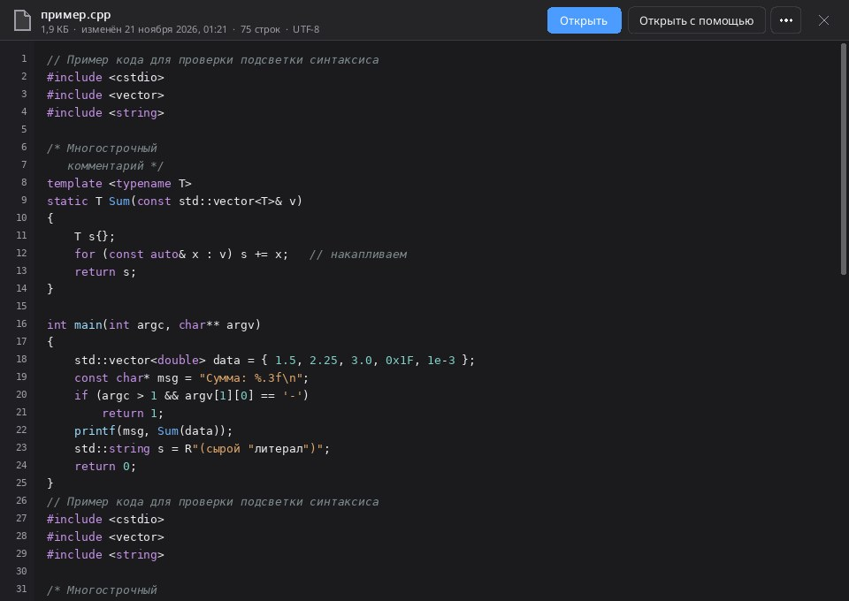
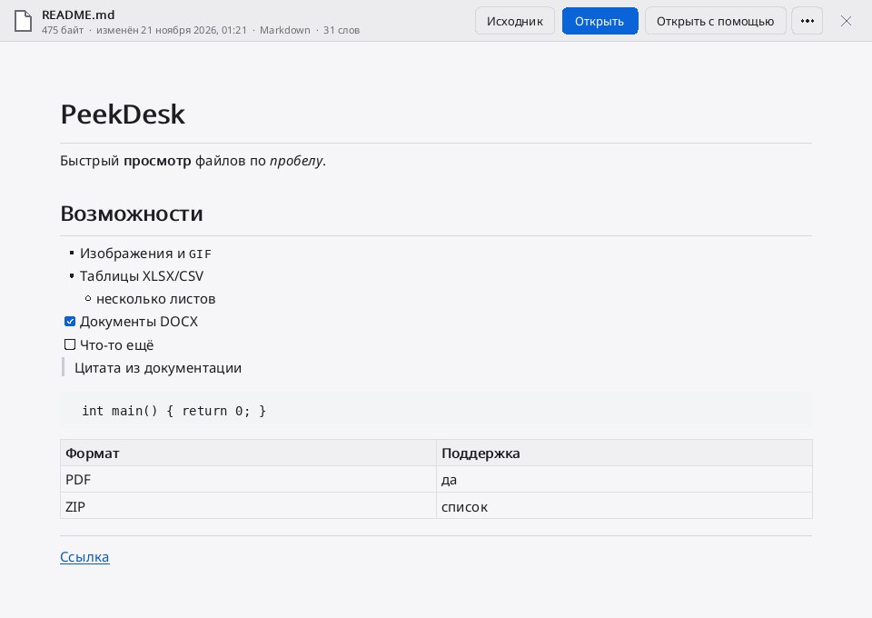
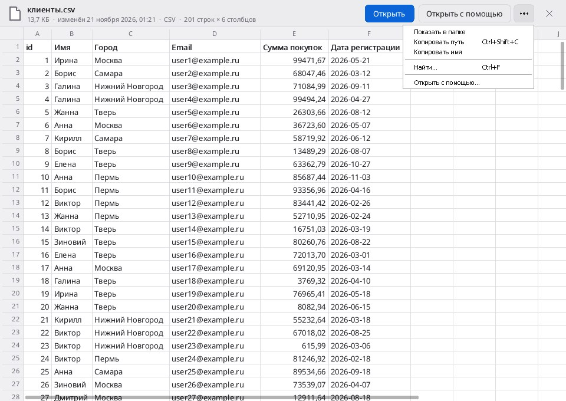

Пробел — и файл уже открыт
PeekDesk — предпросмотр файлов в Проводнике Windows, как Quick Look в macOS. Картинки, Excel, Word, PDF, код и видео — без запуска тяжёлых программ.
Скачать PeekDesk

Что умеет
Бесплатно · без установки · без рекламы · обновляется сама
Мгновенно
Окно появляется за доли секунды, большие файлы дочитываются в фоне. В трее PeekDesk почти не тратит память и ничего не опрашивает.
Картинки
PNG, JPEG, GIF с анимацией, BMP, TIFF, ICO, WebP, HEIC. Масштаб колесом, перетаскивание, поворот клавишей R.
Таблицы
XLSX с листами, форматами и заливками, CSV и TSV — без Excel. Сотни тысяч строк листаются без задержек.
Word и PDF
DOCX с заголовками, списками, таблицами и картинками. PDF — встроенным движком PDFium, со счётчиком страниц.
Текст и код
Подсветка синтаксиса, номера строк, автоопределение кодировки. Markdown — документом или исходником.
Аудио и видео
MP3, WAV, FLAC, MP4, MOV, MKV — с перемоткой и скоростью 0,5×–2×.
Папки и ZIP
Размер и содержимое папки, список файлов в архиве без распаковки, системные обработчики для остального.
Поиск и копирование
Ctrl+F в тексте, документах, PDF и таблицах. Выделите текст или ячейки и нажмите Ctrl+C.
Светлая и тёмная тема
Следует теме Windows. Размер окна запоминается отдельно для каждого типа файлов.
Как это выглядит
Настоящие скриншоты PeekDesk






Клавиши
Всё — с клавиатуры, как в macOS
| Пробел в Проводнике или на рабочем столе | открыть / закрыть предпросмотр |
| Esc · Ctrl+W | закрыть |
| стрелки в Проводнике | окно показывает следующий файл |
| Enter · Ctrl+O | открыть файл в его программе |
| Ctrl+F · F3 | поиск, следующее совпадение |
| Ctrl+C · Ctrl+Shift+C | копировать выделенное · копировать путь |
| колесо · 0 · 1 · R | картинка: масштаб, вписать, 100 %, повернуть |
| Ctrl+PgUp / PgDn | таблица: соседний лист |
| K · стрелки · [ ] | видео: пауза, перемотка на 5 с, скорость |
Как установить
- Скачайте PeekDesk-win64.zip.
- Распакуйте в постоянную папку, например
Документы\PeekDesk. - Запустите PeekDesk.exe — значок появится в трее. Выделите файл в Проводнике и нажмите пробел.
- Если Windows покажет «Система Windows защитила ваш компьютер» — «Подробнее» → «Выполнить в любом случае».
Вопросы
Почему SmartScreen предупреждает?
Программа новая и пока не подписана платным сертификатом. Скачивайте PeekDesk только со страницы выпусков на GitHub — рядом с архивом лежит файл .sha256 с контрольной суммой.
Не будет ли тормозить компьютер?
Нет. В трее PeekDesk ничего не делает и просыпается только по пробелу. PDF и видео загружаются при первом открытии такого файла и выгружаются после.
Пробел перестанет работать в других программах?
Нет. PeekDesk реагирует на пробел, только когда фокус в списке файлов Проводника или на рабочем столе. При переименовании, в адресной строке и поиске пробел работает как обычно.
Программа что-нибудь отправляет?
Нет. Файлы читаются только на вашем компьютере. В интернет PeekDesk обращается лишь к GitHub за обновлениями — это можно выключить. На этом сайте нет счётчиков и аналитики.
Другие программы от Nikolini
Маленькие бесплатные программы для Windows

Обсуждение
Предложить идею · Сообщить о баге · Все обсуждения
Комментарии работают через GitHub-аккаунт и хранятся в обсуждениях проекта.